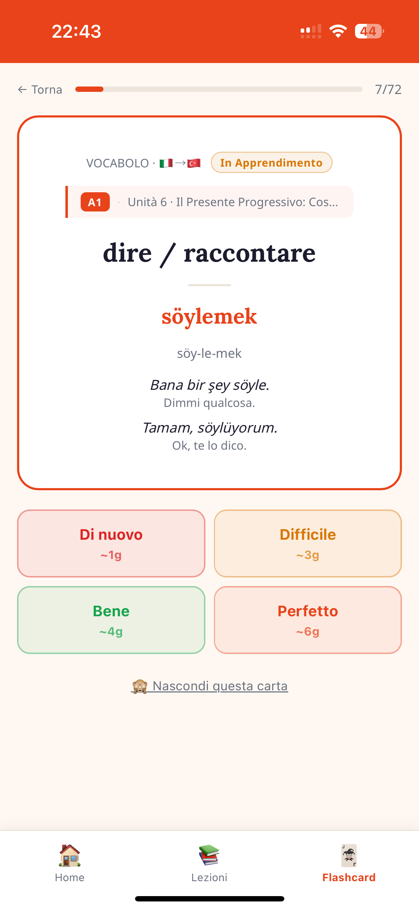

App per imparare le lingue
Kolay.
Facile.
La prima app con un percorso strutturato A1, A2, B1. Niente giochini, niente punti inutili. Solo te e la lingua che vuoi imparare.
Inizia gratis, passa a Pro quando vuoi.

